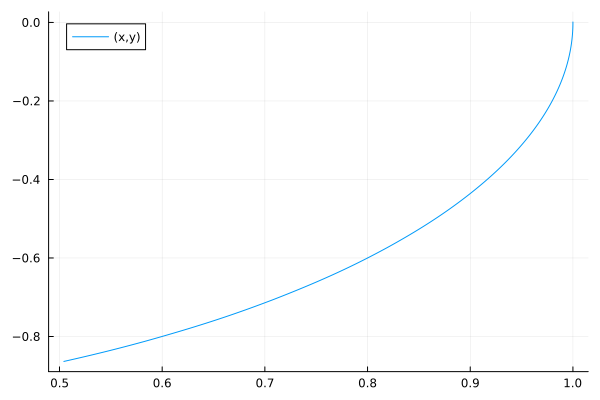
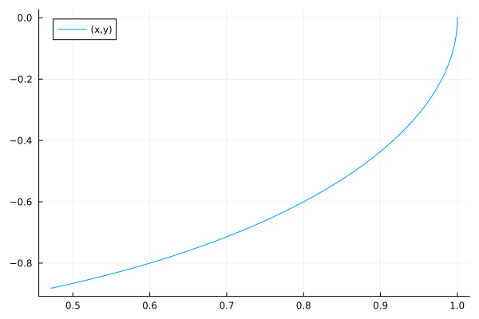
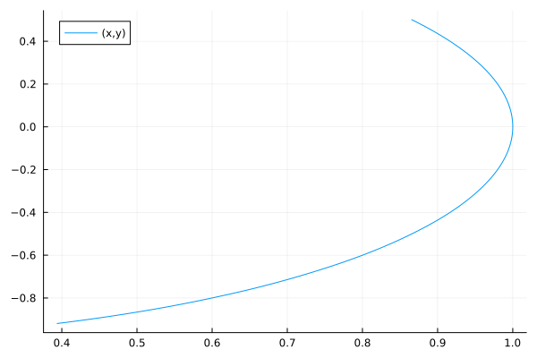

Initialization of Systems
While for simple numerical ODEs choosing an initial condition can be an easy affair, with ModelingToolkit's more general differential-algebraic equation (DAE) system there is more care needed due to the flexibility of the solver state. In this tutorial we will walk through the functionality involved in initialization of System and the diagnostics to better understand and debug the initialization problem.
Primer on Initialization of Differential-Algebraic Equations
Before getting started, let's do a brief walkthrough of the mathematical principles of initialization of DAE systems. Take a DAE written in semi-explicit form:
\[\begin{aligned} x^\prime &= f(x,y,t) \\ 0 &= g(x,y,t) \end{aligned}\]
where $x$ are the differential variables and $y$ are the algebraic variables. An initial condition $u0 = [x(t_0) y(t_0)]$ is said to be consistent if $g(x(t_0),y(t_0),t_0) = 0$.
For ODEs, this is trivially satisfied. However, for more complicated systems it may not be easy to know how to choose the variables such that all of the conditions are satisfied. This is even more complicated when taking into account ModelingToolkit's simplification engine, given that variables can be eliminated and equations can be changed. If this happens, how do you know how to initialize the system?
Bindings and Initial Conditions
ModelingToolkit represents initialization constraints in two different ways: bindings and initial conditions. Both of these are stored as stored as key-value pairs, similar to defaults in prior versions of ModelingToolkit. Bindings represent immutable relations between variables (and parameters) of a system. They cannot be changed after constructing a system. Initial conditions are simply a convenience to avoid repeatedly passing the same values to problem constructors.
using ModelingToolkit, Test
using ModelingToolkit: t_nounits as t, D_nounits as D
@variables x(t) y(t)
@parameters p q
@mtkcompile sys = System([D(x) ~ p * x + y, y ~ q * x], t; bindings = [y => x, q => 2p],
initial_conditions = [x => 1, p => 1])\[ \begin{align} \frac{\mathrm{d} ~ x\left( t \right)}{\mathrm{d}t} &= y\left( t \right) + p ~ x\left( t \right) \end{align} \]
julia> bindings(sys)ReadOnlyDicts.ReadOnlyDict{SymbolicUtils.BasicSymbolicImpl.var"typeof(BasicSymbolicImpl)"{SymReal}, SymbolicUtils.BasicSymbolicImpl.var"typeof(BasicSymbolicImpl)"{SymReal}, ModelingToolkitBase.AtomicArrayDict{SymbolicUtils.BasicSymbolicImpl.var"typeof(BasicSymbolicImpl)"{SymReal}, Dict{SymbolicUtils.BasicSymbolicImpl.var"typeof(BasicSymbolicImpl)"{SymReal}, SymbolicUtils.BasicSymbolicImpl.var"typeof(BasicSymbolicImpl)"{SymReal}}}} with 2 entries: q => 2p y(t) => x(t)julia> @test_throws Exception bindings(sys)[y] = 2x # throwsTest Passed Thrown: MethodErrorjulia> initial_conditions(sys)ModelingToolkitBase.AtomicArrayDict{SymbolicUtils.BasicSymbolicImpl.var"typeof(BasicSymbolicImpl)"{SymReal}, Dict{SymbolicUtils.BasicSymbolicImpl.var"typeof(BasicSymbolicImpl)"{SymReal}, SymbolicUtils.BasicSymbolicImpl.var"typeof(BasicSymbolicImpl)"{SymReal}}} with 2 entries: x(t) => 1 p => 1julia> initial_conditions(sys)[x] = 22julia> initial_conditions(sys)ModelingToolkitBase.AtomicArrayDict{SymbolicUtils.BasicSymbolicImpl.var"typeof(BasicSymbolicImpl)"{SymReal}, Dict{SymbolicUtils.BasicSymbolicImpl.var"typeof(BasicSymbolicImpl)"{SymReal}, SymbolicUtils.BasicSymbolicImpl.var"typeof(BasicSymbolicImpl)"{SymReal}}} with 2 entries: x(t) => 2 p => 1
Variables/parameters which have an entry in bindings are referred to as "bound" variables/ parameters. The term "bound symbolics" is used to refer to such symbolic variables, regardless of whether they are variables or parameters.
Bindings for variables can be constants or functions of other variables/parameters. Bindings for parameters can only be constants or functions of other parameters. It is often useful to bind a parameter to the initial value of a variable. In this case, the Initial operator can be used. In the above example, q => Initial(y) is a valid binding, whereas q => y is not.
Bound symbolics cannot be given initial conditions. No symbolic can have an entry in both bindings and initial_conditions. Since initial_conditions is a convenience for passing values to problem constructors, bound symbolics cannot be given values in the problem constructor either. The exception is solvable parameters, which have a binding of missing. Solving for parameter values is covered in more detail in a later section.
julia> tspan = (0.0, 1.0)(0.0, 1.0)julia> ODEProblem(sys, [], tspan) # fine┌ Warning: Initialization system is overdetermined. 2 equations for 1 unknowns. Initialization will default to using least squares. `SCCNonlinearProblem` can only be used for initialization of fully determined systems and hence will not be used here. │ │ │ To suppress this warning, pass `warn_initialize_determined = false`. To turn this warning into an error, pass `fully_determined = true`. └ @ ModelingToolkit ~/work/ModelingToolkit.jl/ModelingToolkit.jl/src/initialization.jl:22 ODEProblem with uType Vector{Float64} and tType Float64. In-place: true Initialization status: FULLY_DETERMINED Non-trivial mass matrix: false timespan: (0.0, 1.0) u0: 1-element Vector{Float64}: 2.0julia> ODEProblem(sys, [x => 2, p => 2.5], tspan) # fine┌ Warning: Initialization system is overdetermined. 2 equations for 1 unknowns. Initialization will default to using least squares. `SCCNonlinearProblem` can only be used for initialization of fully determined systems and hence will not be used here. │ │ │ To suppress this warning, pass `warn_initialize_determined = false`. To turn this warning into an error, pass `fully_determined = true`. └ @ ModelingToolkit ~/work/ModelingToolkit.jl/ModelingToolkit.jl/src/initialization.jl:22 ODEProblem with uType Vector{Float64} and tType Float64. In-place: true Initialization status: FULLY_DETERMINED Non-trivial mass matrix: false timespan: (0.0, 1.0) u0: 1-element Vector{Float64}: 2.0julia> @test_throws Exception ODEProblem(sys, [y => 1], tspan) # errors┌ Warning: Initialization system is overdetermined. 3 equations for 1 unknowns. Initialization will default to using least squares. `SCCNonlinearProblem` can only be used for initialization of fully determined systems and hence will not be used here. │ │ │ To suppress this warning, pass `warn_initialize_determined = false`. To turn this warning into an error, pass `fully_determined = true`. └ @ ModelingToolkit ~/work/ModelingToolkit.jl/ModelingToolkit.jl/src/initialization.jl:22 Test Passed Thrown: ArgumentErrorjulia> @test_throws Exception ODEProblem(sys, [q => 2], tspan) # errorsTest Passed Thrown: AssertionError
Bindings and initial conditions should not be cyclic. In other words, the binding or initial condition for a symbolic should not (directly or indirectly) be a function of itself.
Bindings for variables are treated equivalently to initial conditions when building problems. They form constraints in the initialization system. Bindings for floating-point-valued discrete variables (created via @discretes and used in events) are also treated in the same way. Bindings for non-floating-point discrete variables (such as ones with integer types) do not turn into constraints in the initialization system, since this would lead to mixed-integer problems. Bindings for these variables are still used to calculate initial conditions as if they were parameters. Bindings for parameters participate in initialization. The bound parameters are treated as unknowns of the initialization system.
The following table summarizes the differences. For each feature involved in initialization, it lists the mutability of that feature and for each type of value on the LHS, it lists the allowed values on the RHS along with its behavior during initialization. For this table, the nomenclature "FP parameter" or "FP variable" is used to refer to parameters/variables which take continuous values, determined by their SymbolicUtils.symtype being Real, or a subtype of AbstractFloat, or an array thereof. The term "variable" in this table is used to refer to both continuously-varying quantities such as the unknowns of a DAE (created via @variables) as well as discretely-varying quantities updated in events (created by @discretes). Note that all FP variables are solved for by initialization. Any quantity that initialization solves for is referred to as an "initialization unknown".
| Feature | Mutability | LHS | RHS/Value | Initialization behavior |
|---|---|---|---|---|
| Bindings | Immutable | FP parameter | Constant/expression of other parameters | The LHS is considered an initialization unknown and the mapping is a constraint equation. |
| Bindings | Immutable | FP parameter | missing | The LHS is considered an initialization unknown |
| Bindings | Immutable | FP variable | Constant/expression of other variables/parameters | The mapping is a constraint equation. |
| Bindings | Immutable | Non-FP parameter | Constant/expression of other parameters | A mapping determining the value of the parameter. Not involved in initialization. |
| Bindings | Immutable | Non-FP variable | Constant/expression of other variables/parameters | A mapping determining the initial value of the variable. Not involved in initialization. |
| Initial conditions | Mutable | FP variable not in bindings | Constant/expression of other variables/parameters | The mapping is a constraint equation. |
| Initial conditions | Mutable | Non-FP variable not in bindings | Constant/expression of other variables/parameters | A mapping determining the initial value of the variable |
| Initial conditions | Mutable | Parameter not in bindings | Constant/expression of other variables/parameters | A mapping determining the value of the parameter |
| Initial conditions | Mutable | Parameter bound to missing | Constant/expression of other variables/parameters | The mapping acts as a constraint equation |
| Initial conditions | Mutable | Variable in bindings | Invalid. Will error. | N/A |
| Initial conditions | Mutable | Parameter in bindings not bound to missing | Invalid. Will error. | N/A |
| Initialization equations | Immutable | N/A | Any equation of variables/parameters | Acts as a constraint in initialization |
The variable-value mapping provided to problem constructors (such as ODEProblem) is merged with (and overrides) initial conditions.
Initialization By Example: The Cartesian Pendulum
To illustrate how to perform the initialization, let's take a look at the Cartesian pendulum:
using OrdinaryDiffEq, Plots
@parameters g
@variables x(t) y(t) [state_priority = 10] λ(t)
eqs = [D(D(x)) ~ λ * x
D(D(y)) ~ λ * y - g
x^2 + y^2 ~ 1]
@mtkcompile pend = System(eqs, t)\[ \begin{align} 0 &= 1 - \left( y\left( t \right) \right)^{2} - \left( x\left( t \right) \right)^{2} \\ \frac{\mathrm{d} ~ y\left( t \right)}{\mathrm{d}t} &= \mathtt{yˍt}\left( t \right) \\ 0 &= - 2 ~ \mathtt{yˍt}\left( t \right) ~ y\left( t \right) - 2 ~ \mathtt{xˍt}\left( t \right) ~ x\left( t \right) \\ \frac{\mathrm{d} ~ \mathtt{yˍt}\left( t \right)}{\mathrm{d}t} &= - g + \lambda\left( t \right) ~ y\left( t \right) \\ 0 &= - 2 ~ \mathtt{xˍtt}\left( t \right) ~ x\left( t \right) - 2 ~ \left( \mathtt{yˍt}\left( t \right) \right)^{2} - 2 ~ \left( \mathtt{xˍt}\left( t \right) \right)^{2} - 2 ~ \left( - g + \lambda\left( t \right) ~ y\left( t \right) \right) ~ y\left( t \right) \end{align} \]
While we defined the system using second derivatives and a length constraint, the structural simplification system improved the numerics of the system to be solvable using the dummy derivative technique, which results in 3 algebraic equations and 2 differential equations. In this case, the differential equations with respect to y and D(y), though it could have just as easily have been x and D(x). How do you initialize such a system if you don't know in advance what variables may defined the equation's state?
To see how the system works, let's start the pendulum in the far right position, i.e. x(0) = 1 and y(0) = 0. We can do this by:
prob = ODEProblem(pend, [x => 1, y => 0, g => 1], (0.0, 1.5), guesses = [λ => 1])ODEProblem with uType Vector{Float64} and tType Float64. In-place: true
Initialization status: FULLY_DETERMINED
Non-trivial mass matrix: true
timespan: (0.0, 1.5)
u0: 5-element Vector{Float64}:
0.0
0.0
1.0
0.0
1.0This solves via:
sol = solve(prob, Rodas5P())
plot(sol, idxs = (x, y))and we can check it satisfies our conditions via:
conditions = getfield.(equations(pend)[3:end], :rhs)3-element Vector{SymbolicUtils.BasicSymbolicImpl.var"typeof(BasicSymbolicImpl)"{SymReal}}:
-2yˍt(t)*y(t) - 2xˍt(t)*x(t)
-g + λ(t)*y(t)
-2xˍtt(t)*x(t) - 2(yˍt(t)^2) - 2(xˍt(t)^2) - 2(-g + λ(t)*y(t))*y(t)[sol[conditions][1]; sol[x][1] - 1; sol[y][1]]5-element Vector{Float64}:
-0.0
-1.0
0.0
0.0
0.0Notice that we set [x => 1, y => 0] as our initial conditions and [λ => 1] as our guess. The difference is that the initial conditions are required to be satisfied, while the guesses are simply a guess for what the initial value might be. Every variable must have either an initial condition or a guess, and thus since we did not know what λ would be we set it to 1 and let the initialization scheme find the correct value for λ. Indeed, the value for λ at the initial time is not 1:
sol[λ][1]0.0We can similarly choose λ = 0 and solve for y to start the system:
prob = ODEProblem(pend, [x => 1, λ => 0, g => 1], (0.0, 1.5); guesses = [y => 1])
sol = solve(prob, Rodas5P())
plot(sol, idxs = (x, y))
or choose to satisfy derivative conditions:
prob = ODEProblem(
pend, [x => 1, D(y) => 0, g => 1], (0.0, 1.5); guesses = [λ => 0, y => 1])
sol = solve(prob, Rodas5P())
plot(sol, idxs = (x, y))
Notice that since a derivative condition is given, we are required to give a guess for y.
We can also directly give equations to be satisfied at the initial point by using the initialization_eqs keyword argument, for example:
prob = ODEProblem(pend, [x => 1, g => 1], (0.0, 1.5); guesses = [λ => 0, y => 1],
initialization_eqs = [y ~ 0])
sol = solve(prob, Rodas5P())
plot(sol, idxs = (x, y))Additionally, note that the initial conditions are allowed to be functions of other variables and parameters:
prob = ODEProblem(
pend, [x => 1, D(y) => g, g => 1], (0.0, 3.0); guesses = [λ => 0, y => 1])
sol = solve(prob, Rodas5P())
plot(sol, idxs = (x, y))
Determinability: Underdetermined and Overdetermined Systems
For this system we have 3 conditions to satisfy:
conditions = getfield.(equations(pend)[3:end], :rhs)3-element Vector{SymbolicUtils.BasicSymbolicImpl.var"typeof(BasicSymbolicImpl)"{SymReal}}:
-2yˍt(t)*y(t) - 2xˍt(t)*x(t)
-g + λ(t)*y(t)
-2xˍtt(t)*x(t) - 2(yˍt(t)^2) - 2(xˍt(t)^2) - 2(-g + λ(t)*y(t))*y(t)when we initialize with
prob = ODEProblem(pend, [x => 1, y => 0, g => 1], (0.0, 1.5); guesses = [y => 0, λ => 1])ODEProblem with uType Vector{Float64} and tType Float64. In-place: true
Initialization status: FULLY_DETERMINED
Non-trivial mass matrix: true
timespan: (0.0, 1.5)
u0: 5-element Vector{Float64}:
0.0
0.0
1.0
0.0
1.0we have two extra conditions to satisfy, x ~ 1 and y ~ 0 at the initial point. That gives 5 equations for 5 variables. However, this is not sufficient for a well-formed system. This initialization is singular, which means that at least one of the initial conditions is redundant and provides no extra information. Here, one of x ~ 1 or y ~ 0 is redundant, since the other can be inferred using the algebraic equation x ^ 2 + y ^ 2 ~ 1. Thus, this is similar to an underdetermined system. To make the system well-formed, we need to give an initial value for a derivative. For example:
prob = ODEProblem(pend, [x => 1, D(y) => 0, g => 1], (0.0, 1.5); guesses = [y => 0, λ => 1])ODEProblem with uType Vector{Float64} and tType Float64. In-place: true
Initialization status: FULLY_DETERMINED
Non-trivial mass matrix: true
timespan: (0.0, 1.5)
u0: 5-element Vector{Float64}:
0.0
0.0
1.0
0.0
1.0Now the system is well-formed. What happens if that's not the case?
prob = ODEProblem(pend, [x => 1, g => 1], (0.0, 1.5); guesses = [y => 0, λ => 1])ODEProblem with uType Vector{Float64} and tType Float64. In-place: true
Initialization status: UNDERDETERMINED
Non-trivial mass matrix: true
timespan: (0.0, 1.5)
u0: 5-element Vector{Float64}:
0.0
0.0
1.0
0.0
1.0Here we have 4 equations for 5 unknowns (note: the warning is post-simplification of the nonlinear system, which solves the trivial x ~ 1 equation analytical and thus says 3 equations for 4 unknowns). This warning thus lets you know the system is underdetermined and thus the solution is not necessarily unique. It can still be solved:
sol = solve(prob, Rodas5P())
plot(sol, idxs = (x, y))and the found initial condition satisfies all constraints which were given. In the opposite direction, we may have an overdetermined system:
prob = ODEProblem(
pend, [x => 1, y => 0.0, D(y) => 0, g => 1], (0.0, 1.5); guesses = [λ => 1])ODEProblem with uType Vector{Float64} and tType Float64. In-place: true
Initialization status: OVERDETERMINED
Non-trivial mass matrix: true
timespan: (0.0, 1.5)
u0: 5-element Vector{Float64}:
0.0
0.0
1.0
0.0
1.0Can that be solved?
sol = solve(prob, Rodas5P())
plot(sol, idxs = (x, y))Indeed since we saw D(y) = 0 at the initial point above, it turns out that this solution is solvable with the chosen initial conditions. However, for overdetermined systems we often aren't that lucky. If the set of initial conditions cannot be satisfied, then you will get a SciMLBase.ReturnCode.InitialFailure:
prob = ODEProblem(
pend, [x => 1, y => 0.0, D(y) => 2.0, λ => 1, g => 1], (0.0, 1.5); guesses = [λ => 1])
sol = solve(prob, Rodas5P())retcode: InitialFailure
Interpolation: specialized 4th (Rodas6P = 5th) order "free" stiffness-aware interpolation
t: 1-element Vector{Float64}:
0.0
u: 1-element Vector{Vector{Float64}}:
[0.0, 0.0, 0.03224724531173706, 2.0, 1.0]What this means is that the initial condition finder failed to find an initial condition. While this can be sometimes due to numerical error (which is then helped by picking guesses closer to the correct value), most circumstances of this come from ill-formed models. Especially if your system is overdetermined and you receive an InitialFailure, the initial conditions may not be analytically satisfiable!. In our case here, if you sit down with a pen and paper long enough you will see that λ = 0 is required for this equation, but since we chose λ = 1 we end up with a set of equations that are impossible to satisfy.
If you would prefer to have an error instead of a warning in the context of non-fully determined systems, pass the keyword argument fully_determined = true into the problem constructor. Additionally, any warning about not being fully determined can be suppressed via passing warn_initialize_determined = false.
Constant constraints in initialization
Consider the pendulum system again:
julia> equations(pend)5-element Vector{Equation}: 0 ~ 1 - (y(t)^2) - (x(t)^2) Differential(t, 1)(y(t)) ~ yˍt(t) 0 ~ -2yˍt(t)*y(t) - 2xˍt(t)*x(t) Differential(t, 1)(yˍt(t)) ~ -g + λ(t)*y(t) 0 ~ -2xˍtt(t)*x(t) - 2(yˍt(t)^2) - 2(xˍt(t)^2) - 2(-g + λ(t)*y(t))*y(t)julia> observed(pend)1-element Vector{Equation}: xˍtt(t) ~ λ(t)*x(t)
Suppose we want to solve the same system with multiple different initial y-velocities from a given position.
prob = ODEProblem(
pend, [x => 1, D(y) => 0, g => 1], (0.0, 1.5); guesses = [λ => 0, y => 1, x => 1])
sol1 = solve(prob, Rodas5P())retcode: Success
Interpolation: specialized 4th (Rodas6P = 5th) order "free" stiffness-aware interpolation
t: 20-element Vector{Float64}:
0.0
1.0e-6
3.548407762676229e-5
0.00038032485389438524
0.0038287326165706145
0.027023171913146474
0.0695289499151999
0.12348384927749806
0.19107204325632426
0.27113999811696615
0.3660937066470977
0.47544659835686737
0.599899375693825
0.7383738183891675
0.8874214909568733
1.038079185020587
1.188736879084301
1.3393945731480148
1.4619889567834916
1.5
u: 20-element Vector{Vector{Float64}}:
[-0.0, 0.0007886435331076187, 1.0, 0.0, 0.0007886430426042784]
[7.886432873557495e-10, 0.000788643532607619, 0.9999996890206408, -9.999993780413668e-7, 0.0007886435316076196]
[2.7984257306772378e-8, 0.0007886429035481277, 0.999999689021137, -3.548405555715762e-5, 0.0007886416444291458]
[2.999131368363695e-7, 0.0007885712096553533, 0.9999996890776752, -0.00038032461737698664, 0.0007884265627508225]
[2.991441244827714e-6, 0.0007813139409135658, 0.9999996947742162, -0.0038287302646429463, 0.0007666547565253928]
[1.1444791090578649e-5, 0.000423517790075023, 0.9999999103163321, -0.02702316331950858, -0.0003067337022065658]
[-0.00011322739659126144, -0.0016284926352107705, 0.9999986740031498, -0.06952883965536948, -0.006462765207889018]
[-0.0008440613716670245, -0.0068354240985983245, 0.9999766381841726, -0.12348045578831018, -0.022083560361448047]
[-0.0033368964995149726, -0.017464566395402926, 0.999847482501849, -0.1910373928481025, -0.05397098979229503]
[-0.009749129340256452, -0.03596056063428679, 0.9993532079150811, -0.27093055055153087, -0.1094589744577123]
[-0.024212466948062485, -0.06616582376483775, 0.9978086306860399, -0.36513378479626535, -0.20007473129840814]
[-0.05316204378821273, -0.11195444571413889, 0.9937133004937772, -0.471868482721102, -0.337440276362563]
[-0.10644663739232098, -0.17800762442807094, 0.9840289820693588, -0.5884393413176328, -0.5355978561521336]
[-0.1963146229646086, -0.26783637140341315, 0.9634641168428449, -0.7061912600443625, -0.8050752761525644]
[-0.33303171743979665, -0.38108736594091924, 0.9245385892187608, -0.807973546657321, -1.144798249686275]
[-0.5124828547286653, -0.5080481739091581, 0.8613283920957633, -0.8688884814696075, -1.525610816403985]
[-0.7242397554645692, -0.6398921822930613, 0.7684658444090973, -0.8698450787062508, -1.920939015101796]
[-0.9489536115812841, -0.7663766114505551, 0.6424039217585901, -0.7956574224807017, -2.299615357694703]
[-1.1221003005422936, -0.857072035750348, 0.5152192333083172, -0.6747728880662355, -2.571105326813654]
[-1.1714979007696487, -0.8818190852317617, 0.4715878079057468, -0.6265064865375264, -2.6467350399822016]sol1[D(y), 1]0.0Repeatedly re-creating the ODEProblem with different values of D(y) and x or repeatedly calling remake is slow. Instead, for any variable => constant constraint in the ODEProblem initialization (whether provided to the ODEProblem constructor or a default value) we can update the constant value. ModelingToolkit refers to these values using the Initial operator. For example:
prob.ps[[Initial(x), Initial(D(y))]]2-element Vector{Float64}:
1.0
0.0To solve with a different starting y-velocity, we can simply do
prob.ps[Initial(D(y))] = -0.1
sol2 = solve(prob, Rodas5P())retcode: Success
Interpolation: specialized 4th (Rodas6P = 5th) order "free" stiffness-aware interpolation
t: 21-element Vector{Float64}:
0.0
1.0e-6
3.125158875761356e-5
0.0003337674763337492
0.0033589263520951056
0.02026509691059571
0.05909395459460881
0.11224437891585354
0.17791855943026905
0.2592281738623804
⋮
0.5941169574053153
0.7340731467322305
0.8800073737316945
1.0259416007311584
1.1718758277306223
1.302109108377256
1.4093805010943077
1.4881127725637089
1.5
u: 21-element Vector{Vector{Float64}}:
[7.886435331076188e-5, 0.0007886435331076187, 1.0, -0.1, -0.009211356957395722]
[7.885516632613283e-5, 0.0007885435326076152, 0.9999996890995003, -0.10000100000726413, -0.00921166268798248]
[7.857636169206172e-5, 0.0007855178858974135, 0.9999996914807778, -0.10003125181544956, -0.009220739628113084]
[7.577319677921907e-5, 0.0007552110847097571, 0.9999997148280682, -0.10033376986243696, -0.009311660031676055]
[4.6212788905378026e-5, 0.00044710966848300615, 0.9999999000464671, -0.10335894645949842, -0.01023596428035634]
[-0.0001735670171402517, -0.0014432032537275295, 0.9999989585816003, -0.12026499768366189, -0.01590690304789471]
[-0.0010924550544862272, -0.006866742954771515, 0.9999764236332459, -0.15908986690224822, -0.032177522278120485]
[-0.0035516972089021884, -0.01673431970996663, 0.9998599713586662, -0.21221055163183297, -0.06178025313787804]
[-0.009121582454789294, -0.032823934277982456, 0.999461148814832, -0.2777444121589902, -0.11004909725254353]
[-0.02107822892045106, -0.05869434724358875, 0.9982759966701198, -0.3584992211742357, -0.18766032410760508]
⋮
[-0.16055554988312223, -0.2325497301812754, 0.9725843311642937, -0.671488406582422, -0.7092213448616789]
[-0.2755912265442516, -0.3342105673632721, 0.9424980878023743, -0.7771987849900669, -1.0141877106998503]
[-0.43500214978733087, -0.45376301686158765, 0.8911220186857466, -0.8543063441128357, -1.3728017922561946]
[-0.6295850565113267, -0.5811431945370197, 0.8138013296243967, -0.8816889641730816, -1.7548368160046484]
[-0.8456362764711044, -0.7079288467811303, 0.706287180467748, -0.843790524980759, -2.1348430575737845]
[-1.038395673228441, -0.8121455988693761, 0.5834669330164705, -0.7461881997448945, -2.4469102376170127]
[-1.1822512167801313, -0.8857725893651002, 0.4641417467856522, -0.6197014162347594, -2.667191596170178]
[-1.2719424737431348, -0.9300786486408658, 0.367377386993592, -0.5025483823004412, -2.8002879033777193]
[-1.284365355049183, -0.9359383347586699, 0.35216393072933616, -0.48326602885471354, -2.8190786922921736]sol2[D(y), 1]-0.1Note that this only applies for constant constraints for the current ODEProblem. For example, D(x) does not have a constant constraint - it is solved for by initialization. Thus, mutating Initial(D(x)) does not have any effect:
julia> sol2[D(x), 1]7.886435331076188e-5julia> prob.ps[Initial(D(x))] = 1.01.0julia> sol3 = solve(prob, Rodas5P())retcode: Success Interpolation: specialized 4th (Rodas6P = 5th) order "free" stiffness-aware interpolation t: 21-element Vector{Float64}: 0.0 1.0e-6 3.125158875761356e-5 0.0003337674763337492 0.0033589263520951056 0.02026509691059571 0.05909395459460881 0.11224437891585354 0.17791855943026905 0.2592281738623804 ⋮ 0.5941169574053153 0.7340731467322305 0.8800073737316945 1.0259416007311584 1.1718758277306223 1.302109108377256 1.4093805010943077 1.4881127725637089 1.5 u: 21-element Vector{Vector{Float64}}: [7.886435331076188e-5, 0.0007886435331076187, 1.0, -0.1, -0.009211356957395722] [7.885516632613283e-5, 0.0007885435326076152, 0.9999996890995003, -0.10000100000726413, -0.00921166268798248] [7.857636169206172e-5, 0.0007855178858974135, 0.9999996914807778, -0.10003125181544956, -0.009220739628113084] [7.577319677921907e-5, 0.0007552110847097571, 0.9999997148280682, -0.10033376986243696, -0.009311660031676055] [4.6212788905378026e-5, 0.00044710966848300615, 0.9999999000464671, -0.10335894645949842, -0.01023596428035634] [-0.0001735670171402517, -0.0014432032537275295, 0.9999989585816003, -0.12026499768366189, -0.01590690304789471] [-0.0010924550544862272, -0.006866742954771515, 0.9999764236332459, -0.15908986690224822, -0.032177522278120485] [-0.0035516972089021884, -0.01673431970996663, 0.9998599713586662, -0.21221055163183297, -0.06178025313787804] [-0.009121582454789294, -0.032823934277982456, 0.999461148814832, -0.2777444121589902, -0.11004909725254353] [-0.02107822892045106, -0.05869434724358875, 0.9982759966701198, -0.3584992211742357, -0.18766032410760508] ⋮ [-0.16055554988312223, -0.2325497301812754, 0.9725843311642937, -0.671488406582422, -0.7092213448616789] [-0.2755912265442516, -0.3342105673632721, 0.9424980878023743, -0.7771987849900669, -1.0141877106998503] [-0.43500214978733087, -0.45376301686158765, 0.8911220186857466, -0.8543063441128357, -1.3728017922561946] [-0.6295850565113267, -0.5811431945370197, 0.8138013296243967, -0.8816889641730816, -1.7548368160046484] [-0.8456362764711044, -0.7079288467811303, 0.706287180467748, -0.843790524980759, -2.1348430575737845] [-1.038395673228441, -0.8121455988693761, 0.5834669330164705, -0.7461881997448945, -2.4469102376170127] [-1.1822512167801313, -0.8857725893651002, 0.4641417467856522, -0.6197014162347594, -2.667191596170178] [-1.2719424737431348, -0.9300786486408658, 0.367377386993592, -0.5025483823004412, -2.8002879033777193] [-1.284365355049183, -0.9359383347586699, 0.35216393072933616, -0.48326602885471354, -2.8190786922921736]julia> sol3[D(x), 1]7.886435331076188e-5
To enforce this constraint, we would have to remake the problem (or construct a new one).
julia> prob2 = remake(prob; u0 = [y => 0.0, D(x) => 0.0, x => nothing, D(y) => nothing]);julia> sol4 = solve(prob2, Rodas5P())retcode: Success Interpolation: specialized 4th (Rodas6P = 5th) order "free" stiffness-aware interpolation t: 20-element Vector{Float64}: 0.0 1.0e-6 5.540219466450185e-5 0.0005994241413095204 0.006039643607759706 0.03755465900304276 0.08672571662088342 0.14500768475163897 0.21805607365401547 0.3034592522412556 0.4042517543642823 0.5193089654142312 0.6494507540547032 0.7927146156554767 0.9436696363653303 1.0946246570751839 1.2455796777850374 1.3808040682851601 1.4865746470779102 1.5 u: 20-element Vector{Vector{Float64}}: [0.0, 0.0, 1.0, 0.0, 0.0] [-4.999999999999893e-19, -4.999999999999966e-13, 1.0, -9.999999999999896e-7, -1.4999999999999716e-12] [-8.502583606501615e-14, -1.5347015868216895e-9, 1.0, -5.540219466450247e-5, -4.604104760465107e-9] [-1.0768933466356877e-10, -1.7965465059232684e-7, 0.9999999999999839, -0.0005994241413095128, -5.389639517769834e-7] [-1.1015493051290433e-7, -1.8238647453103972e-5, 0.9999999998336759, -0.006039643606554288, -5.47159423603467e-5] [-2.648265102334569e-5, -0.0007051761340477578, 0.99999975136322, -0.03755464779808041, -0.0021155284412574093] [-0.0003261459782660234, -0.003760664290007691, 0.9999929286696843, -0.08672498070151313, -0.011281993437637052] [-0.0015245050052265872, -0.010513381771854095, 0.9999447328018571, -0.14499806780315264, -0.031540146901945405] [-0.005183239507423908, -0.023771537883104984, 0.9997174163705099, -0.21798213336906763, -0.07131461877458602] [-0.013963535887989788, -0.046024240627170344, 0.9989403195270796, -0.3030734237531689, -0.13807272467685466] [-0.0329652686733479, -0.08160073125308731, 0.9966650818323947, -0.40263473051056303, -0.24480211068760294] [-0.06964343683797058, -0.13435177127825107, 0.9909336392477366, -0.5136663281576118, -0.4030545797842482] [-0.13515156295194167, -0.20902843312821318, 0.977909380768263, -0.6322889876448508, -0.6270809913762697] [-0.24182097666707617, -0.30807613684899965, 0.9513613325549332, -0.7467708178331304, -0.9242095685006415] [-0.3960514609735341, -0.42805999190668936, 0.9037498982862636, -0.836199499526742, -1.284118191896176] [-0.5895442906089244, -0.558075953072035, 0.8297898570274549, -0.8766331149698674, -1.6740648137181304] [-0.8093220872722928, -0.689382665471604, 0.7244005028244753, -0.850548378223033, -2.06765297613001] [-1.0097634267026647, -0.7990352089537744, 0.6012957096079984, -0.7600532823462876, -2.3960392915221638] [-1.1543246882473206, -0.873600541006331, 0.48665819409446104, -0.6431982369284164, -2.6195181971706334] [-1.171569265729808, -0.8821181626479543, 0.4710281809247916, -0.6255875790423806, -2.6460524857595487]julia> sol4[D(x), 1]0.0
Note the need to provide x => nothing, D(y) => nothing to override the previously provided initial conditions. Since remake is a partial update, the constraints provided to it are merged with the ones already present in the problem. Existing constraints can be removed by providing a value of nothing.
Initial variables
The Initial form used above is only available for a specific set of variables. ModelingToolkit allows using the Initial form on:
- Unknowns (
unknowns(sys)). - Observables (
observables(sys)). - First derivatives of unknowns (even if the unknown in question is itself the derivative of another unknown/observable).
- First derivatives of observables (likewise).
- Discrete variables (created via
@discretesand updated via events). - Bound parameters (
bound_parameters(sys)).
Initialization of parameters
Parameters may also be treated as unknowns in the initialization system. This is automatically the case for any floating-point-typed (a symtype of Real or <:AbstractFloat) bound parameter. The binding is used as an initialization equation. It is also often useful to solve for parameters that are not explicitly bound to functions of other parameters. For example, a model for the fluid flow in a circular pipe might use the cross-sectional area A of the pipe. For convenience, the model may want to allow specifying either the area A directly or the radius r of the pipe. Binding A => pi * r * r prevents directly specifying the value of A. In such cases, the required parameters can be marked as initialization unknowns by giving them a binding of missing. These parameters are henceforth referred to as "solvable parameters". In the previous example, this would entail passing [A => missing, r => missing] to the bindings keyword of the System constructor. The relation between them can be passed as an equation A ~ pi * r * r to the initialization_eqs keyword of the System constructor.
remake will reconstruct the initialization system and problem, given the new constraints provided to it. The new values will be combined with the original variable-value mapping provided to ODEProblem and used to construct the initialization problem.
Parameter initialization by example
Consider the following system, where the sum of two unknowns is a constant parameter total.
using ModelingToolkit, OrdinaryDiffEq # hidden
using ModelingToolkit: t_nounits as t, D_nounits as D # hidden
@variables x(t) y(t)
@parameters total
@mtkcompile sys = System([D(x) ~ -x, total ~ x + y], t; bindings = [total => missing])\[ \begin{align} \frac{\mathrm{d} ~ x\left( t \right)}{\mathrm{d}t} &= - x\left( t \right) \end{align} \]
Given any two of x, y and total we can determine the remaining variable.
prob = ODEProblem(sys, [x => 1.0, y => 2.0], (0.0, 1.0))
integ = init(prob, Tsit5())
integ.ps[total]3.0Suppose we want to re-create this problem, but now solve for x given total and y:
prob2 = remake(prob; u0 = [y => 1.0], p = [total => 4.0])
initsys = prob2.f.initializeprob.f.sys\[ \begin{align} 0 &= \mathtt{total} - y\left( t \right) - x\left( t \right) \end{align} \]
The system is now overdetermined. In fact:
[equations(initsys); observed(initsys)]\[ \begin{align} 0 &= \mathtt{total} - y\left( t \right) - x\left( t \right) \\ y\left( t \right) &= Initial\left( y\left( t \right) \right) \\ \mathtt{total} &= Initial\left( \mathtt{total} \right) \\ x\left( t \right) &= Initial\left( x\left( t \right) \right) \\ \mathtt{xˍt}\left( t \right) &= - x\left( t \right) \end{align} \]
The system can never be satisfied and will always lead to an InitialFailure. This is due to the aforementioned behavior of retaining the original variable-value mapping provided to ODEProblem. To fix this, we pass x => nothing to remake to remove its retained value.
prob2 = remake(prob; u0 = [y => 1.0, x => nothing], p = [total => 4.0])
initsys = prob2.f.initializeprob.f.sys\[ \begin{align} \end{align} \]
The system is fully determined, and the equations are solvable.
[equations(initsys); observed(initsys)]\[ \begin{align} y\left( t \right) &= Initial\left( y\left( t \right) \right) \\ \mathtt{total} &= Initial\left( \mathtt{total} \right) \\ x\left( t \right) &= \mathtt{total} - y\left( t \right) \\ \mathtt{xˍt}\left( t \right) &= - x\left( t \right) \end{align} \]
What constitutes an initialization system?
The initialization system considers the following as unknowns:
- All unknowns of the system (
unknowns(sys)). - First derivatives of all differential variables in the system.
- All observables of the system (
observables(sys)). - All bound parameters of the system (
bound_parameters(sys)). - All parameters with a binding of
missing.
The equations of the initialization system are:
- All equations of the system (
equations(sys)). Differential equations are used to solve for the first derivatives of differential variables. - All observed equations of the system (
observed(sys)). - All bindings in the system, excluding bindings for solvable parameters (since the value is
missing). - All additional initialization equations (
initialization_equations(sys)). This also includes additional equations passed to theinitialization_eqskeyword of the problem constructor. - All initial conditions, formed by combinding
initial_conditions(sys)with those passed to the problem. Initial conditions passed to the problem override those in the system in case of conflict.
ModelingToolkit's improved simplification and index reduction may also be able to analytically find the derivatives of some algebraic variables, typically ones corresponding to algebraic equations that arise from index reduction. In such a case, these variables (along with the corresponding equations) are also present in the initialization system.
Diving Deeper: Constructing the Initialization System
To get a better sense of the initialization system and to help debug it, you can construct the initialization system directly. The initialization system is a NonlinearSystem which requires the system-level information and the additional nonlinear equations being tagged to the system.
isys = generate_initializesystem(pend; op = [x => 1.0, y => 0.0], guesses = [λ => 1])\[ \begin{align} \mathtt{yˍtt}\left( t \right) &= - g + \lambda\left( t \right) ~ y\left( t \right) \\ 0 &= 1 - \left( y\left( t \right) \right)^{2} - \left( x\left( t \right) \right)^{2} \\ 0 &= - 2 ~ \mathtt{yˍt}\left( t \right) ~ y\left( t \right) - 2 ~ \mathtt{xˍt}\left( t \right) ~ x\left( t \right) \\ 0 &= - 2 ~ \mathtt{xˍtt}\left( t \right) ~ x\left( t \right) - 2 ~ \left( \mathtt{yˍt}\left( t \right) \right)^{2} - 2 ~ \left( \mathtt{xˍt}\left( t \right) \right)^{2} - 2 ~ \left( - g + \lambda\left( t \right) ~ y\left( t \right) \right) ~ y\left( t \right) \\ x\left( t \right) &= Initial\left( x\left( t \right) \right) \\ y\left( t \right) &= Initial\left( y\left( t \right) \right) \\ \mathtt{xˍtt}\left( t \right) &= \lambda\left( t \right) ~ x\left( t \right) \end{align} \]
We can inspect what its equations and unknown values are:
equations(isys)\[ \begin{align} \mathtt{yˍtt}\left( t \right) &= - g + \lambda\left( t \right) ~ y\left( t \right) \\ 0 &= 1 - \left( y\left( t \right) \right)^{2} - \left( x\left( t \right) \right)^{2} \\ 0 &= - 2 ~ \mathtt{yˍt}\left( t \right) ~ y\left( t \right) - 2 ~ \mathtt{xˍt}\left( t \right) ~ x\left( t \right) \\ 0 &= - 2 ~ \mathtt{xˍtt}\left( t \right) ~ x\left( t \right) - 2 ~ \left( \mathtt{yˍt}\left( t \right) \right)^{2} - 2 ~ \left( \mathtt{xˍt}\left( t \right) \right)^{2} - 2 ~ \left( - g + \lambda\left( t \right) ~ y\left( t \right) \right) ~ y\left( t \right) \\ x\left( t \right) &= Initial\left( x\left( t \right) \right) \\ y\left( t \right) &= Initial\left( y\left( t \right) \right) \\ \mathtt{xˍtt}\left( t \right) &= \lambda\left( t \right) ~ x\left( t \right) \end{align} \]
unknowns(isys)7-element Vector{SymbolicUtils.BasicSymbolicImpl.var"typeof(BasicSymbolicImpl)"{SymReal}}:
xˍt(t)
y(t)
x(t)
yˍt(t)
λ(t)
xˍtt(t)
yˍtt(t)Notice that all initial conditions are treated as initial equations. Additionally, for systems with observables, those observables are too treated as initial equations. We can see the resulting simplified system via the command:
isys = mtkcompile(isys; fully_determined = false)\[ \begin{align} 0 &= 1 - \left( y\left( t \right) \right)^{2} - \left( x\left( t \right) \right)^{2} \\ 0 &= - 2 ~ \mathtt{yˍt}\left( t \right) ~ y\left( t \right) - 2 ~ \mathtt{xˍt}\left( t \right) ~ x\left( t \right) \\ 0 &= - 2 ~ \mathtt{xˍtt}\left( t \right) ~ x\left( t \right) - 2 ~ \left( \mathtt{yˍt}\left( t \right) \right)^{2} - 2 ~ \left( \mathtt{xˍt}\left( t \right) \right)^{2} - 2 ~ \left( - g + \lambda\left( t \right) ~ y\left( t \right) \right) ~ y\left( t \right) \\ 0 &= Initial\left( x\left( t \right) \right) - x\left( t \right) \end{align} \]
Note fully_determined=false allows for the simplification to occur when the number of equations does not match the number of unknowns, which we can use to investigate our overdetermined system:
isys = ModelingToolkit.generate_initializesystem(
pend; op = [x => 1, y => 0.0, D(y) => 2.0, λ => 1], guesses = [λ => 1])\[ \begin{align} \mathtt{yˍtt}\left( t \right) &= - g + \lambda\left( t \right) ~ y\left( t \right) \\ 0 &= 1 - \left( y\left( t \right) \right)^{2} - \left( x\left( t \right) \right)^{2} \\ 0 &= - 2 ~ \mathtt{yˍt}\left( t \right) ~ y\left( t \right) - 2 ~ \mathtt{xˍt}\left( t \right) ~ x\left( t \right) \\ 0 &= - 2 ~ \mathtt{xˍtt}\left( t \right) ~ x\left( t \right) - 2 ~ \left( \mathtt{yˍt}\left( t \right) \right)^{2} - 2 ~ \left( \mathtt{xˍt}\left( t \right) \right)^{2} - 2 ~ \left( - g + \lambda\left( t \right) ~ y\left( t \right) \right) ~ y\left( t \right) \\ \mathtt{yˍt}\left( t \right) &= Initial\left( \mathtt{yˍt}\left( t \right) \right) \\ \lambda\left( t \right) &= Initial\left( \lambda\left( t \right) \right) \\ x\left( t \right) &= Initial\left( x\left( t \right) \right) \\ y\left( t \right) &= Initial\left( y\left( t \right) \right) \\ \mathtt{xˍtt}\left( t \right) &= \lambda\left( t \right) ~ x\left( t \right) \end{align} \]
isys = mtkcompile(isys; fully_determined = false)\[ \begin{align} 0 &= - 2 ~ \mathtt{yˍt}\left( t \right) ~ y\left( t \right) - 2 ~ \mathtt{xˍt}\left( t \right) ~ x\left( t \right) \\ 0 &= - 2 ~ \mathtt{xˍtt}\left( t \right) ~ x\left( t \right) - 2 ~ \left( \mathtt{yˍt}\left( t \right) \right)^{2} - 2 ~ \left( \mathtt{xˍt}\left( t \right) \right)^{2} - 2 ~ \left( - g + \lambda\left( t \right) ~ y\left( t \right) \right) ~ y\left( t \right) \\ 0 &= 1 - \left( y\left( t \right) \right)^{2} - \left( x\left( t \right) \right)^{2} \\ 0 &= Initial\left( x\left( t \right) \right) - x\left( t \right) \end{align} \]
equations(isys)\[ \begin{align} 0 &= - 2 ~ \mathtt{yˍt}\left( t \right) ~ y\left( t \right) - 2 ~ \mathtt{xˍt}\left( t \right) ~ x\left( t \right) \\ 0 &= - 2 ~ \mathtt{xˍtt}\left( t \right) ~ x\left( t \right) - 2 ~ \left( \mathtt{yˍt}\left( t \right) \right)^{2} - 2 ~ \left( \mathtt{xˍt}\left( t \right) \right)^{2} - 2 ~ \left( - g + \lambda\left( t \right) ~ y\left( t \right) \right) ~ y\left( t \right) \\ 0 &= 1 - \left( y\left( t \right) \right)^{2} - \left( x\left( t \right) \right)^{2} \\ 0 &= Initial\left( x\left( t \right) \right) - x\left( t \right) \end{align} \]
unknowns(isys)2-element Vector{SymbolicUtils.BasicSymbolicImpl.var"typeof(BasicSymbolicImpl)"{SymReal}}:
x(t)
xˍt(t)observed(isys)\[ \begin{align} \mathtt{yˍt}\left( t \right) &= Initial\left( \mathtt{yˍt}\left( t \right) \right) \\ y\left( t \right) &= Initial\left( y\left( t \right) \right) \\ \lambda\left( t \right) &= Initial\left( \lambda\left( t \right) \right) \\ \mathtt{xˍtt}\left( t \right) &= \lambda\left( t \right) ~ x\left( t \right) \\ \mathtt{yˍtt}\left( t \right) &= - g + \lambda\left( t \right) ~ y\left( t \right) \end{align} \]
After simplification we see that we have 5 equatinos to solve with 3 variables, and the system that is given is not solvable.
Numerical Isolation: InitializationProblem
To inspect the numerics of the initialization problem, we can use the InitializationProblem constructor which acts just like an ODEProblem or NonlinearProblem constructor, but creates the special initialization system for a given sys. This is done as follows:
iprob = ModelingToolkit.InitializationProblem(pend, 0.0,
[x => 1, y => 0.0, D(y) => 2.0, λ => 1, g => 1], guesses = [λ => 1])NonlinearLeastSquaresProblem with uType Vector{Float64}. In-place: true
u0: 2-element Vector{Float64}:
1.0
0.0We can see that because the system is overdetermined we receive a NonlinearLeastSquaresProblem, solvable by NonlinearSolve.jl. Using NonlinearSolve we can recreate the initialization solve directly:
using NonlinearSolve
sol = solve(iprob)retcode: MaxIters
u: 2-element Vector{Float64}:
0.03224724523153565
8.088560317367113e-9For more information on solving NonlinearProblems and NonlinearLeastSquaresProblems, check out the NonlinearSolve.jl tutorials!.
We can see that the default solver stalls
sol.statsSciMLBase.NLStats
Number of function evaluations: 12756
Number of Jacobians created: 3417
Number of factorizations: 0
Number of linear solves: 5108
Number of nonlinear solver iterations: 4108after doing many iterations, showing that it tried to compute but could not find a valid solution. Trying other solvers:
sol = solve(iprob, GaussNewton())retcode: MaxIters
u: 2-element Vector{Float64}:
0.030182751588512025
0.0024090376154116515gives the same issue, indicating that the chosen initialization system is unsatisfiable. We can check the residuals:
sol.resid4-element Vector{Float64}:
-0.00014542276782670248
-8.001833603911372
0.9990890015065462
0.969817248411488to see the problem is not equation 2 but other equations in the system. Meanwhile, changing some of the conditions:
iprob = ModelingToolkit.InitializationProblem(pend, 0.0,
[x => 1, y => 0.0, D(y) => 0.0, λ => 0, g => 1], guesses = [λ => 1])NonlinearLeastSquaresProblem with uType Vector{Float64}. In-place: true
u0: 2-element Vector{Float64}:
1.0
0.0gives a NonlinearLeastSquaresProblem which can be solved:
sol = solve(iprob)retcode: Success
u: 2-element Vector{Float64}:
1.0
0.0sol.resid4-element Vector{Float64}:
-0.0
0.0
0.0
0.0In comparison, if we have a well-conditioned system:
iprob = ModelingToolkit.InitializationProblem(pend, 0.0,
[x => 1, D(x) => 0.0, g => 1], guesses = [λ => 1, y => 0])SCCNonlinearProblem with uType Vector{Float64}. In-place: false
u0: 3-element Vector{Float64}:
0.0
0.0
1.0notice that we instead obtained a NonlinearProblem. In this case we can use different solvers which can take advantage of the fact that the Jacobian is square.
sol = solve(iprob)retcode: Success
u: 3-element Vector{Float64}:
0.0
0.0
0.0sol = solve(iprob, TrustRegion())retcode: Success
u: 3-element Vector{Float64}:
0.0
0.0
0.0More Features of the Initialization System: Steady-State and Observable Initialization
This section's examples are currently disabled due to a compatibility issue with the initialization system and the current ModelingToolkit stack.
Let's take a Lotka-Volterra system:
@variables x(t) y(t) z(t)
@parameters α=1.5 β=1.0 γ=3.0 δ=1.0
eqs = [D(x) ~ α * x - β * x * y
D(y) ~ -γ * y + δ * x * y
z ~ x + y]
@named sys = System(eqs, t)
simpsys = mtkcompile(sys)
tspan = (0.0, 10.0)Using the derivative initializations, we can set the ODE to start at the steady state by initializing the derivatives to zero:
prob = ODEProblem(simpsys, [D(x) => 0.0, D(y) => 0.0], tspan, guesses = [x => 1, y => 1])
sol = solve(prob, Tsit5(), abstol = 1e-16)Notice that this is a "numerical zero", not an exact zero, and thus the solution will leave the steady state in this instance because it's an unstable steady state.
Additionally, notice that in this setup we have an observable z ~ x + y. If we instead know the initial condition for the observable we can use that directly:
prob = ODEProblem(simpsys, [D(x) => 0.0, z => 2.0], tspan, guesses = [x => 1, y => 1])
sol = solve(prob, Tsit5())We can check that indeed the solution does satisfy that D(x) = 0 at the start:
sol[α * x - β * x * y]plot(sol)Summary of Initialization API
ModelingToolkitBase.Initial — Type
Initial(x)The Initial operator. Used by initialization to store constant constraints on variables of a system. See the documentation section on initialization for more information.
ModelingToolkitBase.isinitial — Function
Returns true if the parameter p is of the form Initial(x).
ModelingToolkitBase.generate_initializesystem — Function
generate_initializesystem(
sys::ModelingToolkitBase.AbstractSystem;
time_dependent_init,
kwargs...
) -> System
Generate the initialization system for sys. The initialization system is a system of nonlinear equations that solve for the full set of initial conditions of sys given specified constraints.
The initialization system can be of two types: time-dependent and time-independent. Time-dependent initialization systems solve for the initial values of unknowns as well as the values of solvable parameters of the system. Time-independent initialization systems only solve for solvable parameters of the system.
Keyword arguments
time_dependent_init: Whether to create an initialization system for a time-dependent system. A time-dependent initialization requires a time-dependentsys, but a time- independent initialization can be created regardless.op: The operating point of user-specified initial conditions of variables insys.initialization_eqs: Additional initialization equations to use apart from those ininitialization_equations(sys).guesses: Additional guesses to use apart from those inguesses(sys).default_dd_guess: Default guess for dummy derivative variables in time-dependent initialization.algebraic_only: Iffalse, does not use initialization equations (provided via the keyword or part of the system) to construct initialization.check_defguess: Whether to error when a variable does not have a default or guess despite ModelingToolkitBase expecting it to.name: The name of the initialization system.
All other keyword arguments are forwarded to the System constructor.
ModelingToolkitBase.initialization_equations — Function
initialization_equations(
sys::ModelingToolkitBase.AbstractSystem
) -> Any
Get the initialization equations of the system sys and its subsystems.
See also guesses, initial_conditions and ModelingToolkitBase.get_initialization_eqs.
ModelingToolkitBase.guesses — Function
guesses(sys::ModelingToolkitBase.AbstractSystem) -> Any
Get the guesses for variables in the initialization system of the system sys and its subsystems.
See also initialization_equations and ModelingToolkitBase.get_guesses.
ModelingToolkitBase.bindings — Function
bindings(sys::ModelingToolkitBase.AbstractSystem) -> Any
Get the bindings of a system sys and its subsystems.
ModelingToolkitBase.initial_conditions — Function
initial_conditions(
sys::ModelingToolkitBase.AbstractSystem
) -> Any
Get the initial conditions of a system sys and its subsystems.